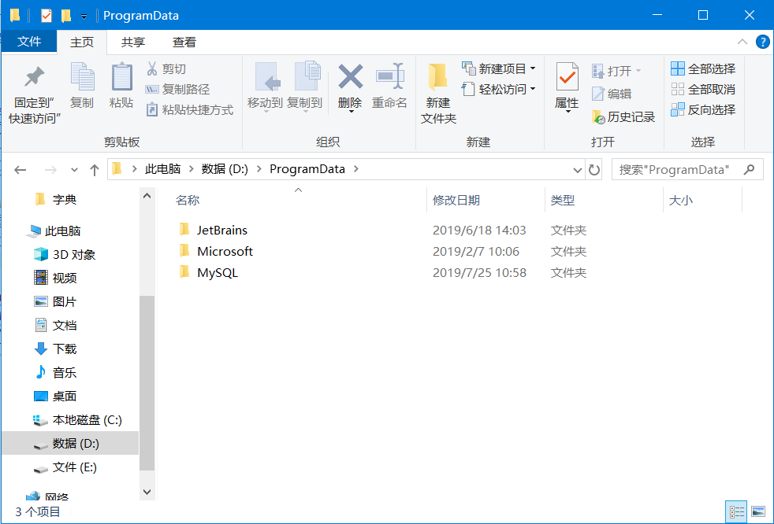
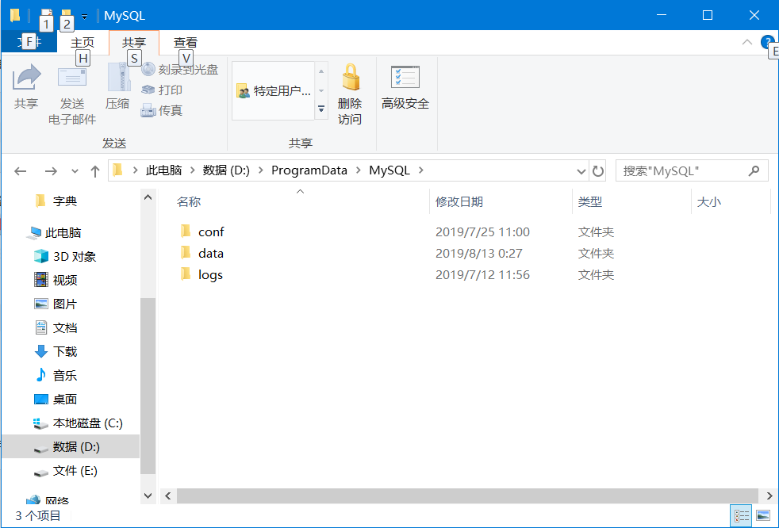
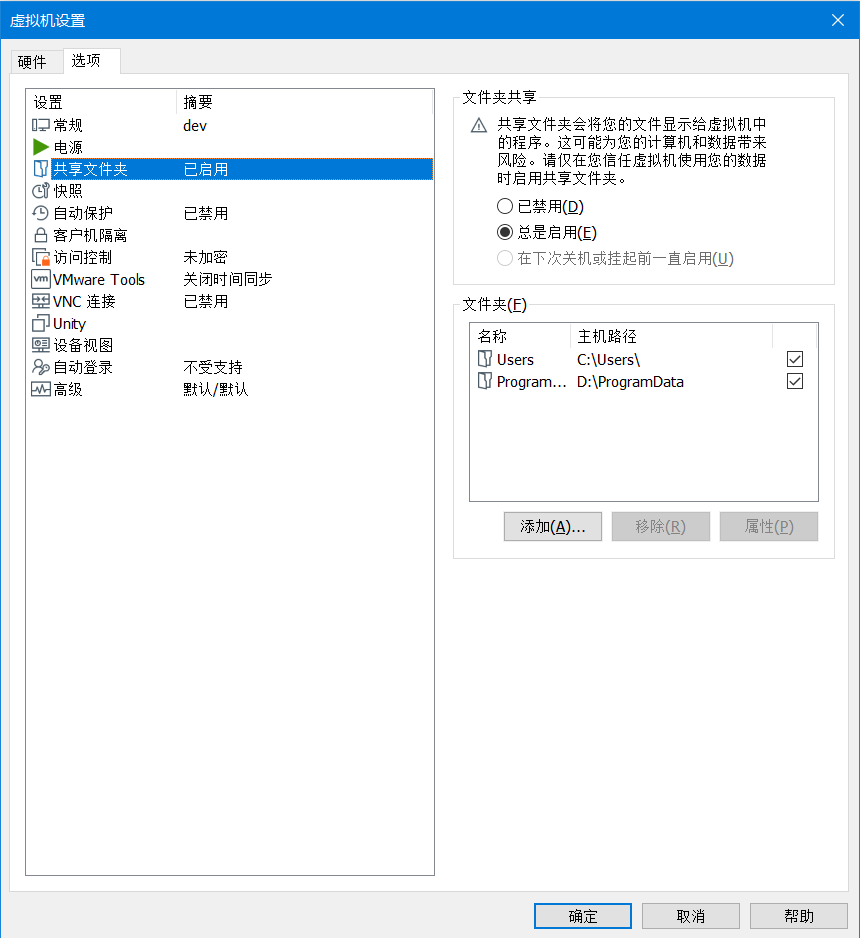
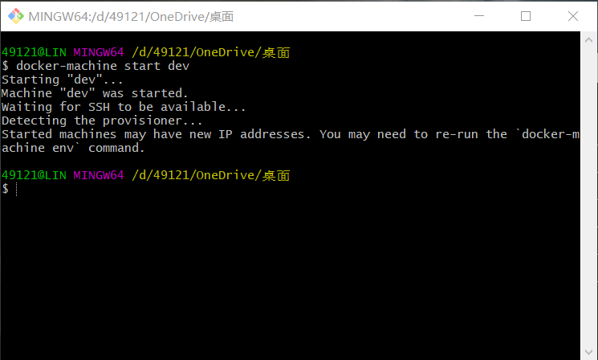
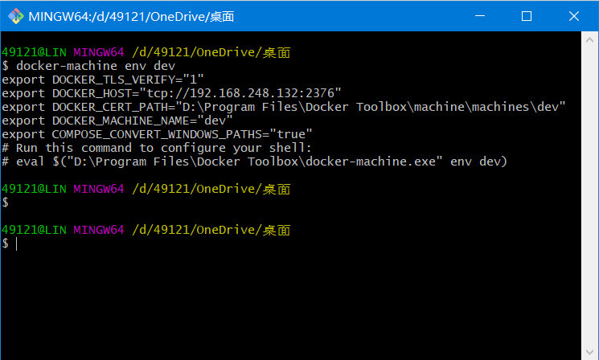

写在前面的
docker对windows真的很不友好，所以早日脱坑，linux大法好
如果你还没有安装好docker，而你又刚好想用VMware来代替hyper-v或Visual box，那么推荐阅读我的这篇博文
建立MySQL数据文件夹
在电脑里选一块风水宝地，建立一个文件夹用于保存MySQL的数据，名字最好是英文的，我建立了MySQL文件夹

然后在文件夹里建立三个文件夹如下，如果你自己命名，请注意之后的bash命令也要做相应修改

文件夹作用如下
|文件夹名|作用|
|-|-|
|conf|保存自己的一些设置，比如加密规则|
|data|保存数据库数据|
|logs|保存数据库日志(好像有点问题)|
然后在conf文件夹里建立my.cnf文件，内容如下(MySQL8的默认加密方式改变了，所以要修改下)
1 | [mysqld] |
Vmware的设置
打开VMware>打开docker虚拟机>编辑虚拟机设置>选项>共享文件夹>添加

将MySQL数据希望保存的位置添加进去共享给虚拟机(即之前的MySQL文件夹)
建立MySQL实例
打开git bash(不要用powershell和cmd！不要用powershell和cmd！不要用powershell和cmd！)，输入如下命令运行docker
1 | docker-machine start *你的虚拟机名* |

激活
1 | docker-machine env *你的虚拟机名* |

这时，系统会提示你用另一个命令来激活，copy后输入回车即可，我这里是
1 | $eval $("D:\Program Files\Docker Toolbox\docker-machine.exe" env dev) |
下载MySQL(下载慢的宝宝请先换源)
1 | docker pull mysql |
我这里已经下载好了，不演示了
建立实例
1 | docker run \ |
重点来了，这些命令的冒号左边是你电脑的实际接口和路径，右边是docker虚拟机的接口和路径，你电脑的共享文件夹被挂载到了虚拟机的//mnt/hgfs/下(双斜杠不能丢，不然git bash会将路径转译导致虚拟机不识别)，所以你只要修改//mnt/hgfs到MySQL(如果你没改名)之间的内容为你的电脑上MySQL文件夹的绝对路径即可(去掉盘符和MySQL)，比如，我的MySQL文件夹的绝对路径是D:\ProgramData\MySQL，将盘符和MySQL去掉是\ProgramData\，然后将\改为/填进去就可以了。
如果你很不幸，共享文件夹没有挂载到//mnt/hgfs/下，那么请ssh登录虚拟机，用whereis命令找出来即可了。
如果你的MySQL启动不了，请将my.cnf的文件映射去掉，可能是我的配置文件的锅，请自己写一下。
ssh登录使用
输入命令登录
1 | docker-machine ssh *你的虚拟机名* |
输入命令进入MySQL环境
1 | docker exec -it mysql bash |
修改加密方式和root密码
1 | ALTER USER 'root'@'%' IDENTIFIED WITH mysql_native_password BY '*你的root密码*'; |
退出ctrl+d，输入
1 | logout |
到这里，你的mysql8.0就可以愉快的使用了。